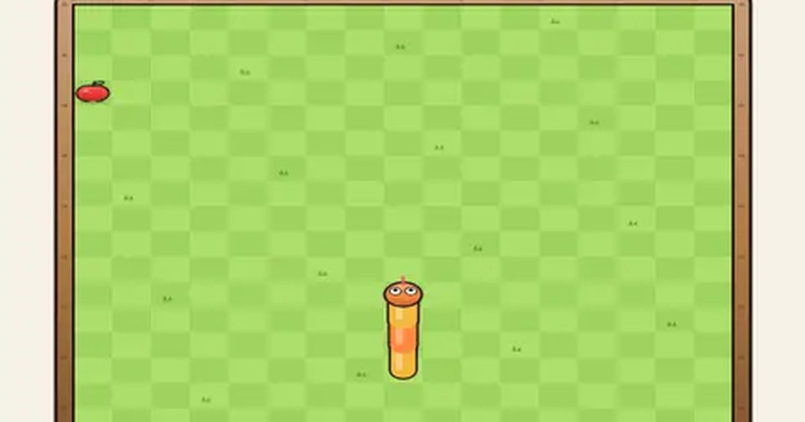

꿈틀 지렁이
Wiggle Worm
고전 · 한 손무료설치 없음폰 · PC
▶ 지금 바로 하기로그인 없이 브라우저에서 바로 시작돼요
어떤 게임인가요?
먹이를 먹을수록 길어지고 빨라져요. 벽과 내 몸에 부딪히면 끝. 연달아 빨리 먹으면 콤보, 황금 별은 5초 한정!
목표 · 먹이를 먹어 최대한 길어지세요. 벽이나 내 몸에 부딪히면 끝.
게임 방법
- 지렁이는 계속 앞으로 가고, 방향만 바꿀 수 있어요. 바로 뒤로는 못 돌아요.
- 빨간 먹이를 먹으면 10점, 한 칸 길어지고 조금 빨라집니다.
- 2.6초 안에 연달아 먹으면 콤보: 한 번 이어질 때마다 +5점씩 더.
- 먹이 5개마다 황금 별이 5초 동안 나타나요. 먹으면 +50.
- Easy: 벽을 통과해 반대편으로 나와요 · Medium: 벽에 부딪히면 끝 · Hard: 더 빠르고 돌 장애물까지.
- 먹이 12개마다 레벨 업: 보너스 점수와 함께 돌이 조금씩 늘어요 (벽 통과 모드 제외).
- 아이템(8초 뒤 사라짐): 시계 = 6초 느리게 · 유령 = 6초 동안 몸·돌 통과 · 자석 = 먹이가 머리 쪽으로 다가옴 · 가위 = 꼬리 4칸 자르기.
등장하는 것들
- 먹이 · 10점 · 한 칸 길어짐
- 황금 별 · 5초 한정 +50
- 콤보 · 2.6초 안에 연달아 먹기
- 돌 (Hard) · 부딪히면 끝
- 시계 · 6초 느리게
- 유령 · 6초 통과
- 자석 · 먹이 끌어오기
- 가위 · 꼬리 4칸 자르기
공략 팁
- 몸이 길어지면 가장자리를 따라 크게 돌아 공간을 남겨 두세요.
- U턴은 옆으로 한 번, 뒤로 한 번 — 두 번 연달아 밀면 돼요.
- 콤보를 노리되 막다른 곳으로 들어가지 않게 조심.
이런 게임도 있어요
 알콩달콩 농장농장 경영 · 시간 도전
알콩달콩 농장농장 경영 · 시간 도전 미니 축구축구 · 4:4 · 1P/2P
미니 축구축구 · 4:4 · 1P/2P 몬스터 서바이벌생존 · 자동 공격
몬스터 서바이벌생존 · 자동 공격 한 획 한복한붓그리기 · 꾸미기
한 획 한복한붓그리기 · 꾸미기 두더지 팡팡반사신경 · 60초
두더지 팡팡반사신경 · 60초 돌팔매 대결턴제 · 1P/2P
돌팔매 대결턴제 · 1P/2P